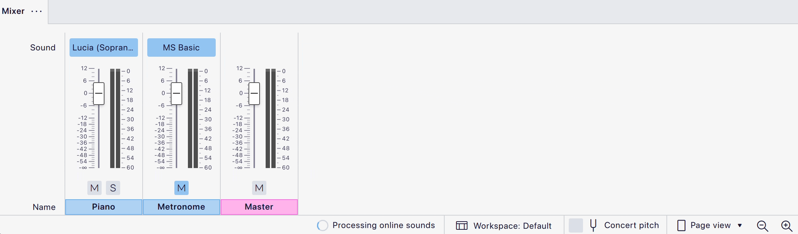

Online sounds
How online sounds work
Online sounds are only compatible with MuseScore Studio version 4.6 and above. It's highly recommended to use the latest available version to ensure the best performance. This feature is currently only available on Windows and macOS.
Online sounds are sound libraries that process your notation data on a remote server before sending audio back to MuseScore Studio. This allows for more realistic, context-aware playback. The feature can also understand text information such as lyrics, allowing playback to 'sing' vocal lines containing words.
How to set up online sounds
To setup online sounds in MuseScore Studio, you'll first need to install a sound library from MuseHub that supports online processing.
As of December 2025, Turing Opera Workshop's Cantai is the only sound library in MuseHub that supports online sounds in MuseScore Studio. Other sound libraries and vendors will be gradually added to MuseHub over time.
To install Cantai, please ensure all instances of MuseScore Studio are closed.
- Ensure you are running the latest version of MuseHub (If you don't yet have Muse Hub, you can download it for free from musehub.com)
- Search for Cantai or locate it in the MuseSounds page
- Install Cantai by clicking on the purple Install or Download buttons
Once Cantai is installed:
- Restart MuseScore Studio
- Open the Mixer
- Go to the Sound selector and locate Cantai in the MuseSounds menu
- Choose a singer/voice type
A new indicator appears in the status bar at the bottom of the app window, letting you know when your notation is processing online, and when it's ready for playback.

Using online sounds
By default, your notation is periodically processed in the background while you work. This happens every few seconds, one you stop inputting or editing notation.
A flashing purple bar appears above the regions of notation being processed. If a region hasn't yet finished processing, a piano sound will be substituted during playback.

Customizing online sounds processing
Apart from the default automatic processing option, you can choose to see the flashing purple bar less frequently (i.e. only during playback) and you can even take full manual control over when processing occurs.
To change when the purple processing bar appears:
- Open Preferences
- Go to Audio & MIDI
- Scroll down to Online sounds
- Click the dropdown menu next to Show processing visualisation
- Choose Only if processing is unfinished during playback to see the purple processing bar above unprocessed regions only after pressing play**.
- Choose Never to allow online sounds to continue processing automatically in the background without ever displaying the purple processing bar.
To enable manual control over processing:
- Open Preferences
- Go to Audio & MIDI
- Scroll down to Online sounds
- Uncheck Automatically process online sounds in the background
The processing indicator in the status bar turns into a button. Click this button at any time to process online sounds.
Manually controlling processing can reduce the chances of exceeding any data processing limits set by online sound library vendors. It can also be useful when tethering to mobile data or when working with an unreliable internet connection.

Caching and resetting processed audio
MuseScore Studio stores your processed audio in a system cache on your computer. This means that notation that's already been processed won't need to be re-processed unless you make a change to it. It also allows you to continue hearing your processed audio without an internet connection (although note that any changes you make when offline will trigger the default piano sound to replace your processed audio until processing is able to recommence once your internet connection resumes).
If you want to delete all the processed audio stored on your computer:
- Go to Help
- Click Clear online sounds cache for this score
This action only affects the individual score you're working on, and will not affect scores open in other app instances at the same time.
Clearing a score's online sounds cache automatically triggers a re-processing of your notation.
Limitations
Processing limits
Different vendors may apply their own limitations on how much processing ('rendering') you can do from MuseScore Studio within a given timeframe. To understand a specific library's limitations, please consult the User Guide for the sound library in question (found in the library's product page in MuseHub).
Note that processing limits only apply to unprocessed notation data; notation you've already processed – and which is stored locally ('cached') on your computer – is unaffected and still available for playback, even after any processing limits are reached.
As of December 2025, Cantai includes up to 180 minutes of rendering time per week, with time resetting every Monday. Any parts of your score that have already been processed will continue to play back even after the weekly limit has been reached.
MuseScore Studio is not responsible for, nor can it control processing limits, but it will notify you in the app if and when you reach your limits, and when your processing quotas will be reset.
Languages
As of December 2025, Cantai is available in English and Latin. German, French, Spanish, Japanese, and Chinese are in development. Unsupported languages may render in parts, but are unlikely to work fully and reliably.